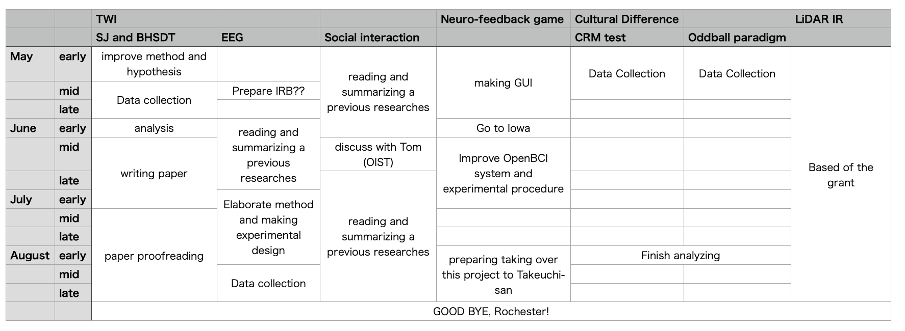

Temporal Window of Integration for an audio-tactile situation
Comparison between SJ task and Bayesian inference of hierarchical signal detection theory
Comparison of task difference and personality using EEG
Social interaction of TWI behavior
Neuro-feedback game (RIT - U of Iowa)
Cultural difference of spatial selective attention (with Sungyoung)
spatial coordinate response measure (CRM) test
spatial oddball paradigm
Room acoustics estimation using LiDAR sensor (with Sungyoung)
Multisensory information of digital content at appropriate timing offers player's immersion and presence. Especially for sound-related tactile sensations, multimodal stimuli can be generated from direct contact or close proximity to a target object. Coupled with unique features which each sensory naturally has, a multimodal stimulus enables us to perceive details of a target object's distance and texture. Therefore, the presentation of a sound-related vibrotactile stimulus in the digital content could improve user experience, which may lead to enhanced immersion into a given context.
The perception of time and, in particular, synchrony between human senses is not straightforward because there is no dedicated sense organ that registers time on an absolute scale. Moreover, to perceive the synchrony of multimodal information, the brain has to deal with differences in physical and neural transmission time. However, even though some physical parameters such as presenting timings or spatial distances are slightly different, our brain can integrate and perceive multisensory information as occurring at the same timing if a temporal difference is within a short time window.
This time window to create perceptual temporal synchrony calls Temporal Window of Integration (hereinafter called TWI). There are two typical methods to measure TWI; Simultaneous Judgement task (SJ task) and Temporal Order Judgement task (TOJ task). The TOJ and SJ tasks have been used more or less interchangeably, however, several studies report that these methods may bring different TWI values because SJ and TOJ tasks may be subject to different kinds of response biases. Due to the nature of the experiment, these tasks are difficult to control these biases, and thus, to the best knowledge of the authors, there is no straightforward and reasonable solution to appropriately measure TWI.
We hereby attempted to measure TWI based on the discriminability $d^{\prime}$ of Signal Detection Theory (SDT) to reduce these concerns above as much as possible. SDT can independently obtain the sensibility of the participant's signal discriminability $d^{\prime}$ and the judgment criterion $\beta$. Therefore, the parameter $d^{\prime}$ calculated by SDT, which be derived independently from participants' criteria, has a possibility to derive a more decent TWI. The conventional SDT has limitations on data distribution, SDT using Bayesian inference can solve this problem. Consequently, the SDT using Bayesian inference can both avoid the effect of response bias and overcome the assumption of a conventional SDT.
Theoretically, Bayesian inference of signal detection theory can overcome the disadvantages of conventional TWI measurement theory. However, we not sure how much these disadvantages could overcome and how close this proposed theory could be decent TWI.
Therefore, we will investigate the method difference comparing these measurements and try to extract the effect of response biases which in SJ task inherently has. There are several previous studies which compare the difference of SJ and TOJ task, thus, we will use these comparison techniques.
Moreover, we will attempt to investigate individual or group's TWI trend using a hierarchical model. To employ this method, we will consider the trend and the reason more systematically. \ why we can see the trend using the hierarchical model?
I will do data collection this may and write a journal paper by the end of summer.
We attempt to see the individual difference using specific ERPs. Basharat et al. reported that, compared to younger adults, older adults showed a sustained higher auditory N1 ERP amplitude response across SOAs, suggestive of broader response properties from an extended temporal binding window. We will use this research paradigm to investigate the reason for TWI group differences in terms of personality.
I will do data collection this August and write a journal paper by the end of this year.
We will think about the TWI behavior changing with social interaction. In our previous researches, we will focus on only intermodality interaction (such as one person's audio-tactile synchrony). However, interpersonal influence should exist. For example, when two users collaboratively playing games and music, they have to meet their internal timing to accomplish their task. At this time, their TWIs will be calibrated to align the timing and behavior.
We will attempt to investigate this phenomenon using the method of Embodied cognitive science. There are several studies to investigate interpersonal synchrony calibration of brain oscillation. We will try to see the phenomenon and the cause using these methods, EEG or fMRI.
I will write the proposal by the end of August, and continue this research at OIST.
Collaborative research project between RIT and the University of Iowa (Prof. Inyong Choi). It is a series of experiments on developing an ear-training system for people who have hearing difficulties employing a neuroscientific approach. In this term, we will focus on the two topics; 1. the data quality differences between OpenBCI which is a self-made commercial EEG device, and BioSemi, a research-purpose EEG device. 2. making the prototype of a Neuro-feedback game using Unity and Matlab.
We already finish some data analysis about the data quality and reliability such as jitter between trigger and EEGs, a trend of maximum potential, and epoch canceling method based on its potential, overall ERP quality. I am not sure we can write a small paper about this topic.
We will focus on making a user interface using Unity by end of this May, and think about the best and easiest way to conducting the experiment.
I already made the experiment. I will collect the subjective data this May.
I already made the prototype of the experiment, yet, seems we need to discuss and improve more the experimental design to be able to obtain participants' spatial selective attention.
LiDAR is a method for determining ranges (variable distance) by targeting an object with a laser and measuring the time for the reflected light to return to the receiver. Lidar can also be used to make digital 3-D representations of areas on the earth's surface and ocean bottom, due to differences in laser return times, and by varying laser wavelengths.
Recently, this sensor has been installed on iPhone and can be used easily. Most AR applications estimate the surface and user's position using this sensor, however, it seems there are not applications to use it for acoustic estimation.
Therefore, we will attempt to estimate a room impulse response using this technology. We have already made a prototype of an IR estimation program using LiDAR-based point cloud data. We will improve the room shape estimation method more, and compare the differences of actual room IR and the estimated data.
